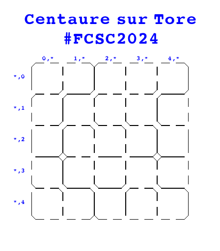
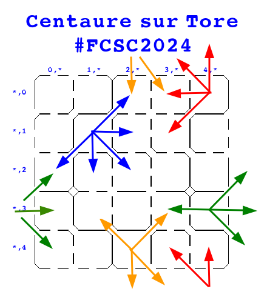
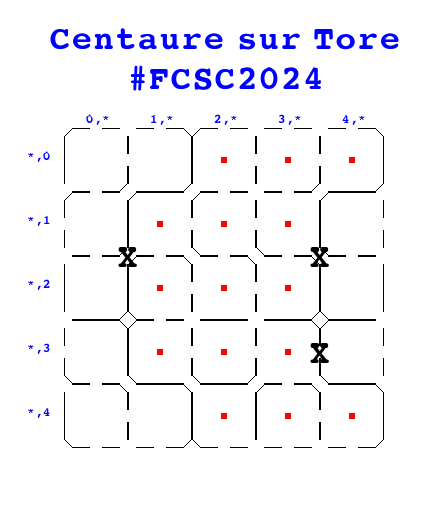

Challenge #443
Centaure sur Tore
Dans le système d’Alpha Centauri, vous exploitez une ferme pour centaures installée sur
un astéroïde torique. Les paturages sont organisés en prés carrés, séparés par des
barrières disposées à des endroits prédéfinis. Il est possible à un centaure de passer
d’un pré à un pré voisin de manière horizontale, vertical ou diagonale si une barrière
ne bloque pas l’accès. Lors des passages en diagonale, le passage permet aux centaures
de passer tout droit, mais il est trop étroit pour qu’il puisse y changer de direction
(voir l’image en pièce jointe example-directions.png pour l’explication sur
les
déplacements possibles).
Vous vous apprêtez à gérer deux centaures. Mais c’est la tuile, les
centaures sont
des animaux solitaires, il faut à tout prix éviter que les deux centaures puissent se
rencontrer dans le même pré carré. Avant de les accueillir, vous n’avez le temps
d’installer que trois barrières supplémentaires dans la zone : où
devez-vous les
placer pour pouvoir loger les deux bêtes sans qu’elles puissent se rencontrer ?
Les prés carrés sont identifiés par un système de coordonnées, par exemple
(0, 1)
ou (1, 2), et les emplacements pour les barrières sont identifés par une
paire de
coordonnées, par exemple ((0, 1), (1, 2)).
On donne un exemple en dimension 5x5 dans les figures jointes :
- example-empty.png : exemple d’une ferme pour centaure torique avec des
barrières
placées entre les prés carrés.
- example-directions.png : exemple de directions possibles avec un
placement de
barrières donné. Sur cet exemple, depuis le pré carré situé en (1, 1), un centaure peut
aller en (2, 0), (0, 2) et (2, 2).
- example-solved.png : exemple de barrière à ajouter pour isoler les deux
centaures. Le programme attend comme entrée : [ ((1, 1), (0, 2)), ((3, 1), (4, 2)),
((3, 3), (4, 3)) ]. L’ordre des prés carrés n’est pas important, ((1, 1), (0,
2)) et ((0, 2), (1, 1)) représente la même barrière.
Une fois connecté au service ci-dessous, vous devrez placer trois barrières dans 100
fermes générées aléatoirement. SI vous y parvenez, dans la limite de 30 secondes pour
chaque ferme, vous obtiendrez le flag !
Fichiers à étudier
- example-empty.png
- example-directions.png
- example-solved.png
| example-empty.png | example-directions.png | example-solved.png |
|  |  |  |